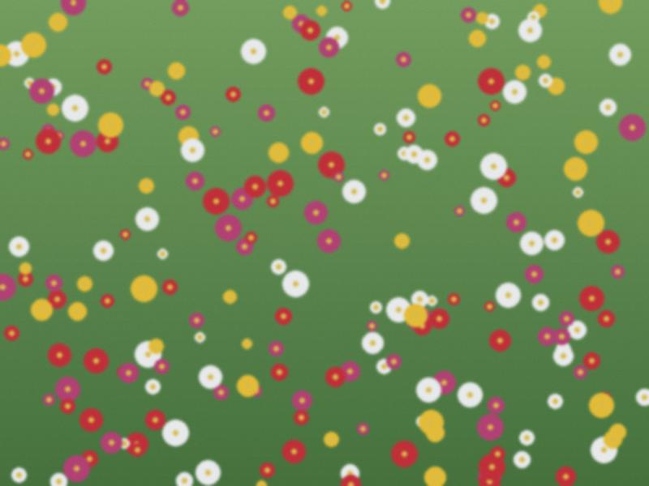

Aruuke gets in
12 March 2017 · Kids

Aruuke at the kindergarten gate with the rabbit bag, first morning.She is in! Number 214 became number 31 because (I hear) many parents gave up and went to the private groups in Talas. Kindergarten No. 4, the middle group, from Monday. We bought a small bag with a rabbit and a pair of slippers with her name written inside in marker.
The first morning she cried at the door and I cried in the lane. Dastan was at work. The teacher, Zarema Anarbekovna, looked at me and said "Go home, mama, we have tea." Aruuke was singing by lunch.
♥ 148
1 comments
It is always the mother who cries more. Quite right.
Comments are closed.